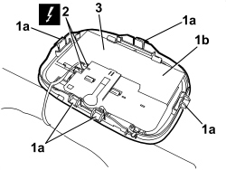
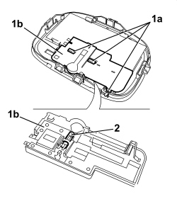

7040E21 COURTESY LIGHT FOR SUN VISOR MIRROR (ONE), LH OR RH - R.R
- Path
- Procedures > 70 FITTINGS > 7040 BODY INTERIOR FITTINGS AND TRIM > 7040E INTERIOR COURTESY LIGHT SYSTEM > 7040E21 COURTESY LIGHT FOR SUN VISOR MIRROR (ONE), LH OR RH - R.R
- Kind
- repair procedure (removal / refitting; the operation number is the code)
- Applies to
- all engines; all production periods
- Interactive page
- https://sloeber94.github.io/elrnDB/alfa/159/en/#/939011253
Applies to: all engines; all production periods
 Removing
Removing
 Refitting
RefittingOp. 7065C34 SUN BLIND (ONE), LEFT OR RIGHT - R.R.
1. Release the retainers (1a) and move the courtesy light (1b) slightly.
2. Disconnect the electrical connection for the courtesy light.
Description | Component |
|---|---|
DRIVER'S SUN VISOR LIGHT | |
PASSENGER SIDE SUN VISOR LIGHT |
3 Keep the courtesy light.

Applies to: all engines; all production periods
- Replace the bulb, if necessary, proceeding as follows.
1. Release the retainers (1a) and remove the bulb holder (1b).
2. Extract the bulb (press fit).

Applies to: all engines; all production periods
Refitting
Removing- Check that the courtesy light and the bulb are not damaged.
- Fit the bulb.
- Position the bulb holder and attach the retainers.
- Connect the electrical connection for the courtesy light.
- Position the courtesy light and attach the retainers.
Topics linked from this page (3)
- 7065C34 SUN BLIND (ONE), LEFT OR RIGHT - R.R.
- G031 DRIVER'S SUN VISOR LIGHT
- G032 PASSENGER SIDE SUN VISOR LIGHT
Topics that link to this page (4)
- E2520 GLOVE COMPARTMENT LIGHT - BOOT LIGHT - SUN VISOR LIGHT - WIRING DIAGRAM
- E2520 GLOVE COMPARTMENT LIGHT - BOOT LIGHT - SUN VISOR LIGHT - COMPONENT LOCATION
- E2520 GLOVE COMPARTMENT LIGHT - BOOT LIGHT - SUN VISOR LIGHT - WIRING DIAGRAM
- E2520 GLOVE COMPARTMENT LIGHT - BOOT LIGHT - SUN VISOR LIGHT - COMPONENT LOCATION